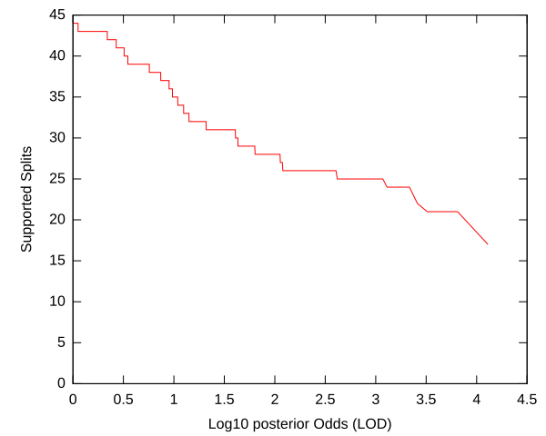
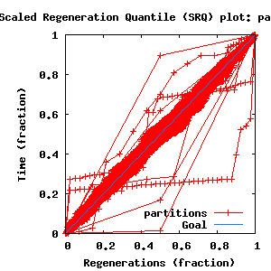
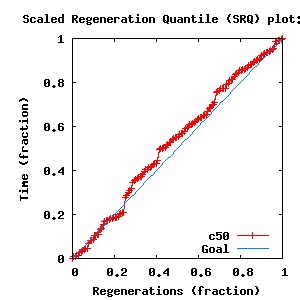

Sections:
MCMC Post-hoc Analysis: 68 sequences
directory: /home/biodept/br51/Reports/Lutzoni-Fungi
subdirectory: fungi-DP3-1
command line: bali-phy -c 8.script
directory: /home/biodept/br51/Reports/Lutzoni-Fungi
subdirectory: fungi-DP3-2
command line: bali-phy -c 8.script
directory: /home/biodept/br51/Reports/Lutzoni-Fungi
subdirectory: fungi-DP3-3
command line: bali-phy -c 8.script
directory: /home/biodept/br51/Reports/Lutzoni-Fungi
subdirectory: fungi-DP3-4
command line: bali-phy -c 8.script
| Partition | Sequences | Lengths | Substitution Model | Indel Model |
|---|
| 1 |
ITS1-trimmed.fasta |
198 - 210DNA nucleotides |
TN+DP[3] |
RS07 |
| 2 |
5.8S.fasta |
155 - 156DNA nucleotides |
TN |
none |
| 3 |
ITS2-trimmed.fasta |
154 - 159DNA nucleotides |
TN+DP[3] |
RS07 |
| burn-in = 1708 samples |
sub-sample = 5 |
P(data|M) = -2994.161 +- 0.764
|
| Complete sample: 12946
topologies |
95% Bayesian credible interval: 12299 topologies |
| chain # | Iterations (after burnin) |
|---|
| 1 |
15650 samples |
| 2 |
16860 samples |
| 3 |
16820 samples |
| 4 |
15380 samples |

| Partition support: Summary |
| Partition support graph: SVG |
Partition 1
|
|
|
Diff |
|
Min. %identity |
# Sites |
Constant |
Informative |
| Initial |
FASTA |
HTML |
Diff |
|
68.9% |
223 |
93 (41.7%) |
93 (41.7%) |
| Best (WPD) |
FASTA |
HTML |
|
AU |
67.3% |
241 |
94 (39%) |
96 (39.8%) |
Partition 2
|
|
|
Diff |
|
Min. %identity |
# Sites |
Constant |
Informative |
| Initial |
FASTA |
HTML |
|
|
96.8% |
156 |
144 (92.3%) |
5 (3.21%) |
Partition 3
|
|
|
Diff |
|
Min. %identity |
# Sites |
Constant |
Informative |
| Initial |
FASTA |
HTML |
Diff |
|
74.4% |
172 |
77 (44.8%) |
75 (43.6%) |
| Best (WPD) |
FASTA |
HTML |
|
AU |
78% |
171 |
81 (47.4%) |
62 (36.3%) |


- Partition uncertainty
- SRQ plot: partitions
- SRQ plot: c50
- Variation in split frequency estimates
| burnin (scalar) | Ne (scalar) | Ne (partition) | ASDSF | MSDSF | PSRF-CI80% | PSRF-RCF |
|---|
| 440 | 557 | 112.511 | 0.006 | 0.030
| 1.006 | 1.022 |
| Statistic | Median | 95% BCI | ACT | Ne | burnin | PSRF-CI80% | PSRF-RCF |
|---|
| prior |
-995.4 |
(-1051, -945.2) |
2.054 |
6303 |
197
|
0.9982 | 0.9954
| Trace |
| prior_A1 |
-402 |
(-431.3, -379.3) |
2.365 |
5474 |
214
|
0.9992 | 0.9888
| Trace |
| prior_A3 |
-207.8 |
(-237.9, -188.7) |
2.546 |
5085 |
175
|
0.9991 | 1.007
| Trace |
| likelihood |
-2961 |
(-2991, -2929) |
2.148 |
6027 |
110
|
0.9978 | 0.9875
| Trace |
| logp |
-3956 |
(-4003, -3912) |
1.352 |
9578 |
180
|
0.9988 | 1.012
| Trace |
| Heat.beta |
1 |
| | | |
| Main.mu1 |
0.00845 |
(0.006392, 0.0114) |
1 |
12946 |
77
|
0.9994 | 1.015
| Trace |
| Main.mu2 |
0.000604 |
(0.000311, 0.001072) |
1 |
12946 |
224
|
1.001 | 1.001
| Trace |
| S1.TN.kappaPur |
2.85 |
(2.056, 3.965) |
1 |
12946 |
253
|
0.9977 | 1.016
| Trace |
| S1.TN.kappaPyr |
4.622 |
(3.503, 6.161) |
1.089 |
11889 |
194
|
1.002 | 0.994
| Trace |
| S1.F.piA |
0.1871 |
(0.1586, 0.2187) |
1.062 |
12188 |
209
|
1.001 | 1.013
| Trace |
| S1.F.piG |
0.2766 |
(0.2414, 0.3139) |
1 |
12946 |
90
|
0.9991 | 1.012
| Trace |
| S1.F.piT |
0.226 |
(0.1953, 0.2596) |
1.034 |
12525 |
136
|
1.001 | 0.9869
| Trace |
| S1.F.piC |
0.3092 |
(0.2737, 0.3459) |
1.01 |
12817 |
113
|
0.9998 | 1.006
| Trace |
| S1.DP.f1[S1] |
0.4606 |
(0.1506, 0.65) |
1.304 |
9925 |
104
|
0.9995 | 0.9984
| Trace |
| S1.DP.f2[S1] |
0.2663 |
(0.06517, 0.5121) |
1.076 |
12030 |
87
|
1.001 | 1.001
| Trace |
| S1.DP.f3[S1] |
0.2952 |
(0.0708, 0.4704) |
1.323 |
9782 |
151
|
1 | 0.9945
| Trace |
| S1.DP.rates1[S1] |
0.05304 |
(0.01412, 0.1047) |
1.294 |
10005 |
275
|
0.9992 | 1.002
| Trace |
| S1.DP.rates2[S1] |
0.2489 |
(0.0917, 0.4495) |
1.632 |
7932 |
214
|
0.9985 | 1.001
| Trace |
| S1.DP.rates3[S1] |
0.7029 |
(0.4996, 0.8511) |
1.487 |
8705 |
177
|
0.998 | 1.001
| Trace |
| S2.TN.kappaPur |
1.856 |
(0.8062, 3.144) |
1.108 |
11687 |
238
|
0.999 | 1.001
| Trace |
| S2.TN.kappaPyr |
4.48 |
(1.957, 14.36) |
1.019 |
12708 |
83
|
1.006 | 1.013
| Trace |
| S2.F.piA |
0.2478 |
(0.1869, 0.3166) |
1 |
12946 |
76
|
1.001 | 0.998
| Trace |
| S2.F.piG |
0.2469 |
(0.1865, 0.3158) |
1 |
12946 |
110
|
1.001 | 0.9891
| Trace |
| S2.F.piT |
0.2638 |
(0.2024, 0.3311) |
1 |
12946 |
147
|
0.9981 | 0.9896
| Trace |
| S2.F.piC |
0.2376 |
(0.1776, 0.3034) |
1 |
12946 |
86
|
0.9973 | 0.9915
| Trace |
| I1.RS07.logLambda |
-2.346 |
(-2.639, -2.07) |
1.165 |
11116 |
128
|
1 | 1.017
| Trace |
| I1.RS07.meanIndelLength |
1.198 |
(1.104, 1.345) |
1.246 |
10390 |
173
|
0.9946 | 0.9963
| Trace |
| |A1| |
242 |
(239, 246) |
23.24 |
557 |
440 |
0.75 | 0.9763
| Trace |
| #indels1 |
51 |
(48, 56) |
2.328 |
5559 |
191 |
0.8 | 0.9901
| Trace |
| |indels1| |
64 |
(59, 70) |
2.478 |
5224 |
166 |
0.8571 | 0.9959
| Trace |
| #substs1 |
210 |
(205, 216) |
3.372 |
3839 |
206 |
0.8571 | 0.9965
| Trace |
| #substs2 |
12 |
(12, 13) |
1 |
12946 |
31 |
1 | 1.005
| Trace |
| |A3| |
172 |
(169, 175) |
16.02 |
808 |
245 |
0.8 | 1.022
| Trace |
| #indels3 |
26 |
(23, 31) |
2.548 |
5080 |
160 |
0.8 | 1.003
| Trace |
| |indels3| |
28 |
(25, 34) |
2.142 |
6042 |
175 |
0.8333 | 1.003
| Trace |
| #substs3 |
154 |
(148, 159) |
2.623 |
4935 |
119 |
0.8571 | 1.016
| Trace |
| |A| |
570 |
(566, 575) |
22.69 |
570 |
428 |
0.8333 | 0.9903
| Trace |
| #indels |
77 |
(72, 84) |
2.448 |
5287 |
150 |
0.875 | 0.9926
| Trace |
| |indels| |
92 |
(86, 101) |
2.488 |
5202 |
386 |
0.8649 | 0.9912
| Trace |
| #substs |
376 |
(369, 384) |
2.804 |
4616 |
150 |
0.9 | 0.9907
| Trace |
| |T| |
0.7937 |
(0.6861, 0.9156) |
1 |
12946 |
131
|
0.9984 | 1.001
| Trace |
{kind=link}
{kind=link}
{kind=link}
{kind=link}
{kind=link}
{kind=link}
{kind=link}
{kind=link}
{kind=link}
{kind=link}
{kind=link}
{kind=link}
{kind=link}
{kind=link}
{kind=link}
{kind=link}
{kind=link}
{kind=link}
{kind=link}
{kind=link}
{kind=link}
{kind=link}
{kind=link}
{kind=link}
{kind=link}
{kind=link}
{kind=link}
{kind=link}
{kind=link}
{kind=link}
{kind=link}
{kind=link}
{kind=link}
{kind=link}
{kind=link}
{kind=link}
{kind=link}
{kind=link}
{kind=link}
{kind=link}
{kind=link}
{kind=link}
{kind=link}
{kind=link}
{kind=link}
{kind=link}
{kind=link}
{kind=link}
{kind=link}
{kind=link}
{kind=link}
{kind=link}
{kind=link}